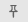

Manage Windows in MATLAB Online
When you open some files, apps, and tools, they open in new windows within the MATLAB® Online™ environment.
The title bar of a window provides you with the options to pop out, pin, collapse, minimize, maximize, and close a window individually.
Pop out window — Open a window in a new browser tab. (since R2025a)
Only a subset of windows support being popped out. To return the content of a tab to the main MATLAB Online environment, close the tab.
Pin — Prevent a window from being collapsed or minimized. (since R2023b)
Collapse — Reduce the size of a window by displaying only its title bar. (since R2023b)
Minimize — Hide a window.
Maximize — Fit a window to the full size of the MATLAB Online environment.
Close — Close a window.
Automatically Collapse and Expand Open Windows
Since R2023b
By default, when you click the MATLAB background, open windows in the foreground collapse to display only their title bars.

To restore the collapsed windows, click the title bar of one of the previously open windows. To prevent a window from being collapsed or minimized, click  on its title bar.
To disable the automatic collapse, on the Home tab, in the
Environment section, click  Settings. Select MATLAB > General > Collapsible Windows. Then, clear Enable Auto-Collapse.
Settings. Select MATLAB > General > Collapsible Windows. Then, clear Enable Auto-Collapse.
Minimize and Restore Open Windows
To manage windows, use the buttons at the bottom right of the MATLAB Online environment.
To toggle whether a window is minimized, click . Then, select the window to minimize or restore.
To minimize all open windows, click . To restore the previously open windows, click .
To display a taskbar that lists the minimized windows, click . From the taskbar, toggle whether a window is minimized by clicking the window title. The taskbar persists until you click or start a new MATLAB Online session.
At the bottom right of the MATLAB Online environment, the Switch Windows button indicates the number of minimized windows.